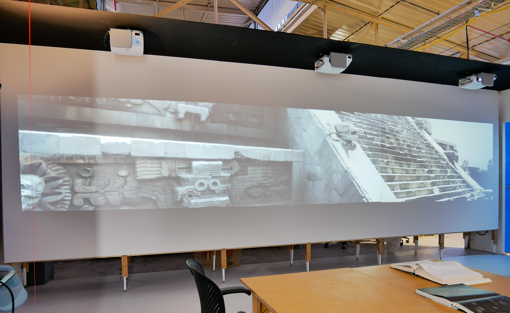
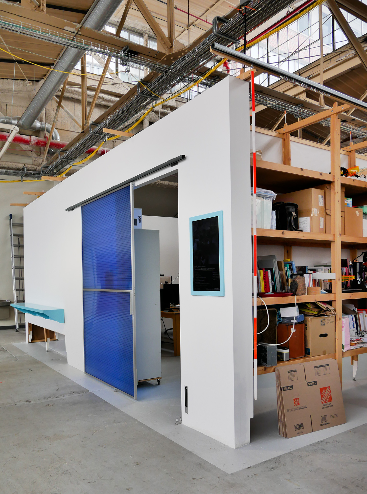
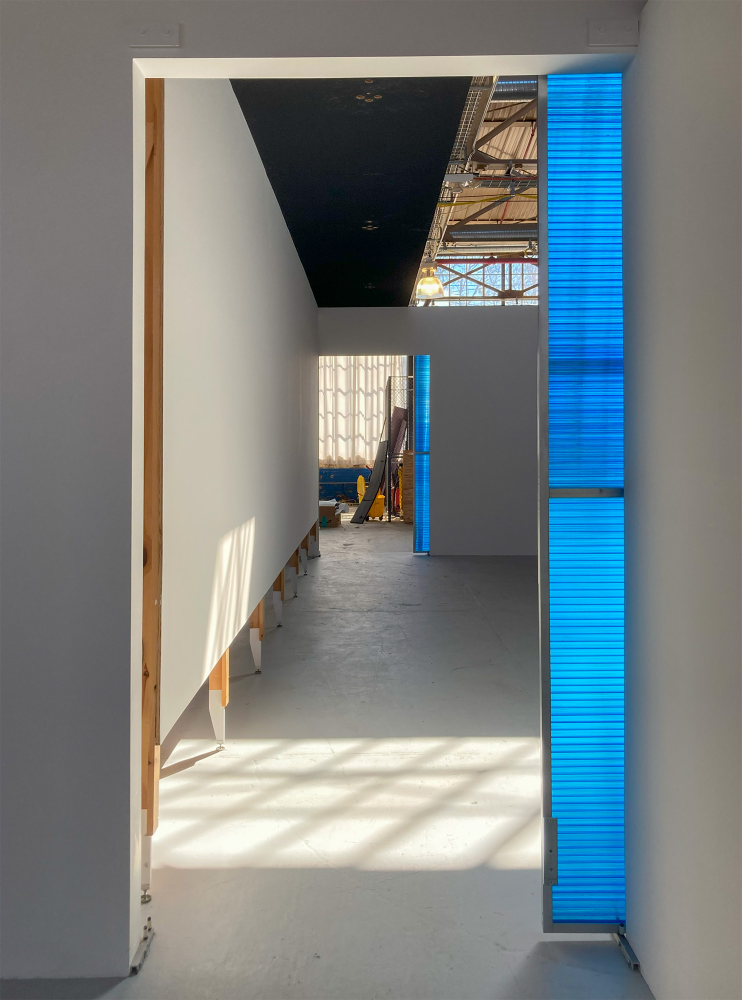
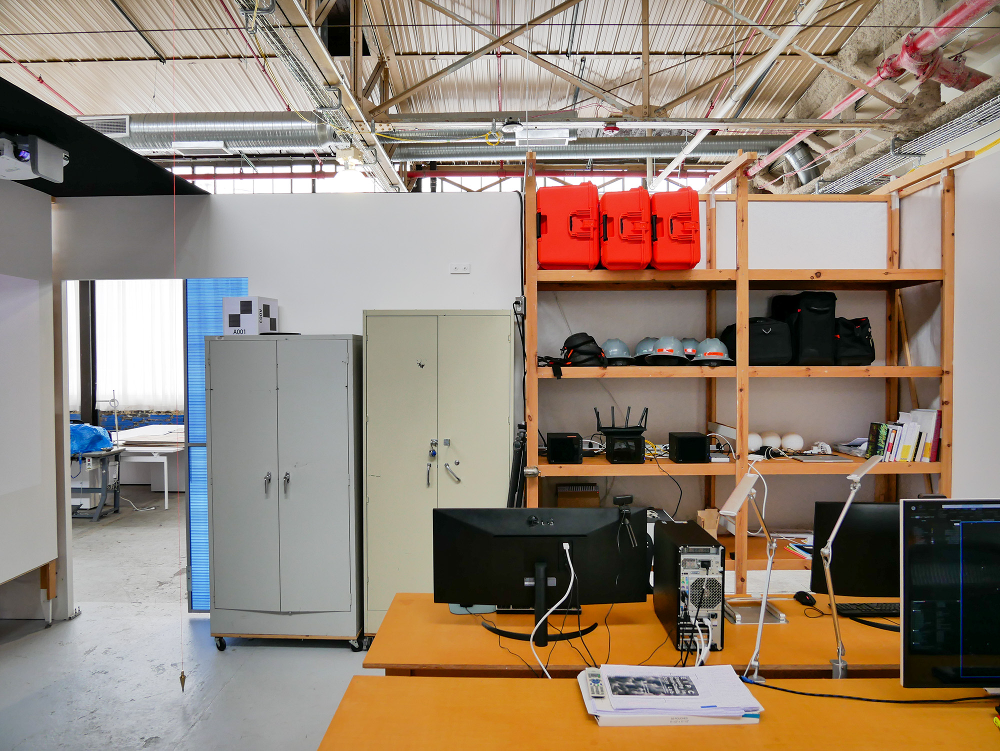
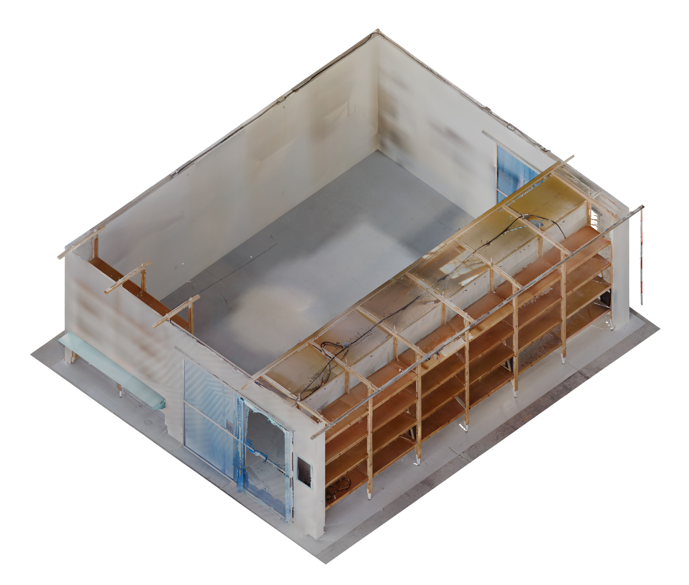
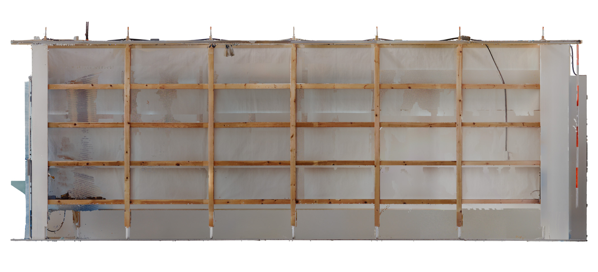
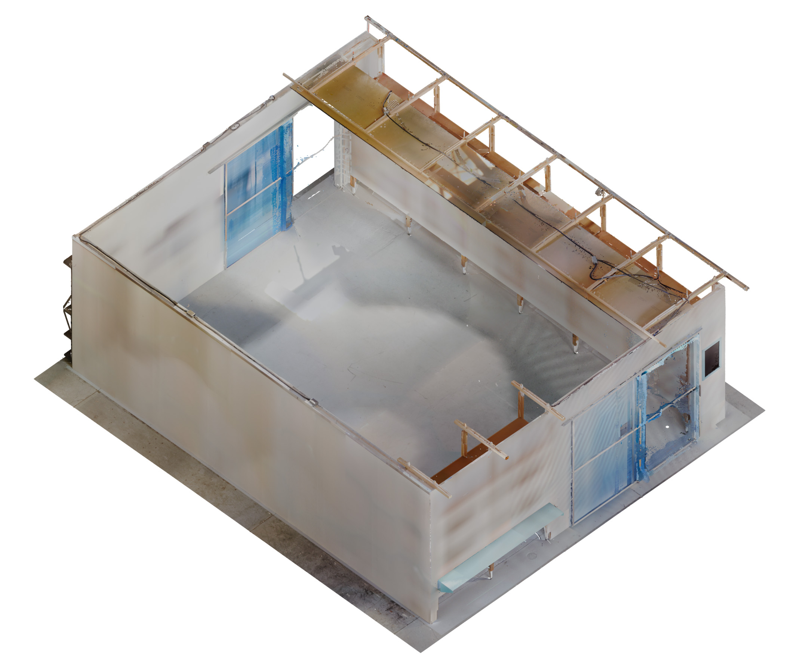
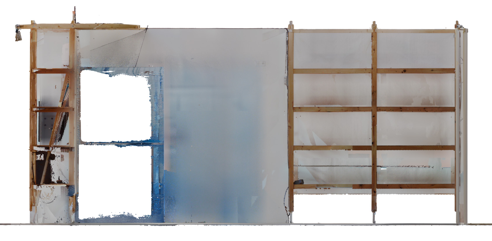
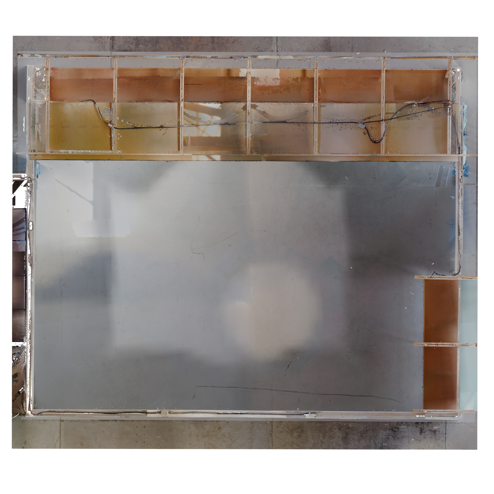

The EIPC Scan Lab, housed within the Liberty Research Annex, served as the core workspace for Empathy In Point Clouds. Designed to support a range of digital documentation and visualization workflows, the lab featured a triple-array of short-throw projectors for large-scale image display, a large lightbox and turntable for high-quality object photogrammetry, and flexible table space for meetings, equipment setup, and computer-based work. As both a production and collaboration hub, the Scan Lab played a central role in advancing EIPC’s reality capture projects and fostering interdisciplinary exchange.







